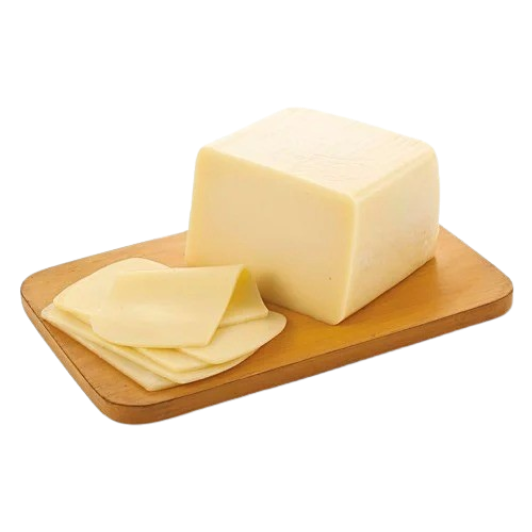
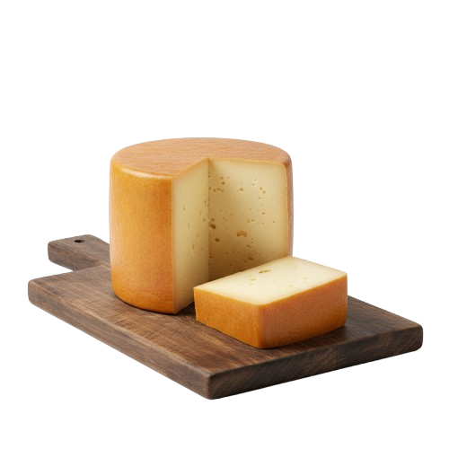
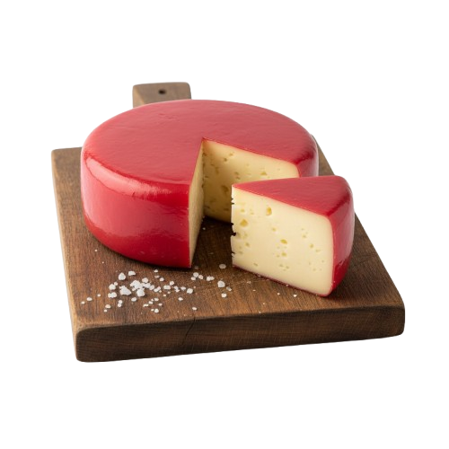
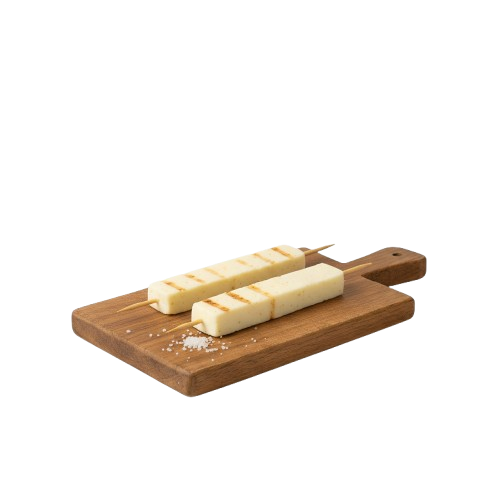
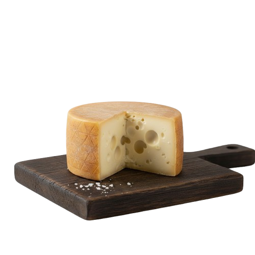
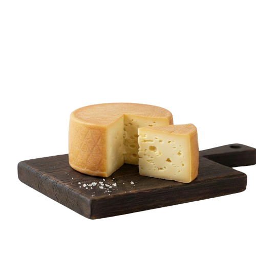

Mais que sabores, experiências.

Maciez irresistível e sabor suave, perfeita para derreter em qualquer receita.

Aroma marcante e sabor levemente defumado que conquista paladares exigentes.

Textura cremosa e notas adocicadas que transformam cada fatia em uma experiência única.

Ideal para assar e compartilhar, com sabor marcante e textura inconfundível.

ofisticação suíça em cada pedaço, perfeito para receitas requintadas e paladares exigentes.

O verdadeiro sabor da tradição do campo, com autenticidade e qualidade artesanal.